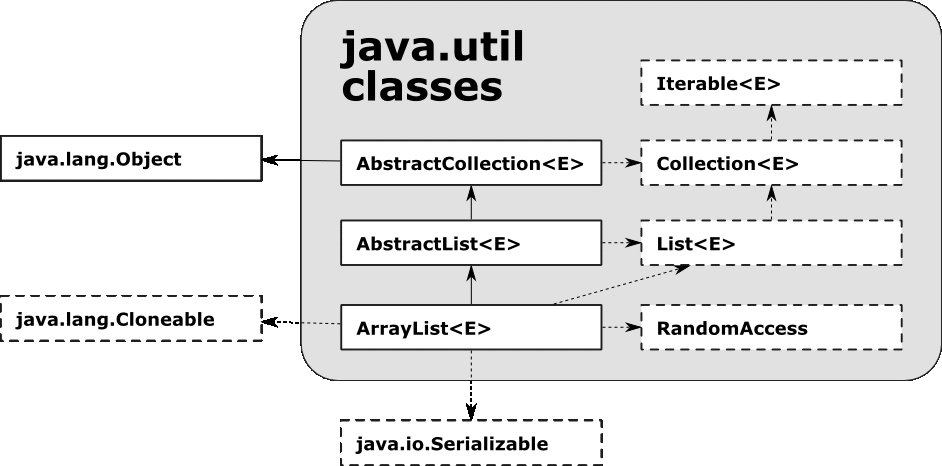

The Java 8 API Hierarchy Visualized
Java is one of the world's most popular and powerful general programming languages. Developed in 1995 by Sun Microsystems to be concurrent, class-based, and object-oriented, it has become a pillar of the computer science industry. It's extensive and organized API has fueled Java's popularity for decades, providing a plethora of useful resources for developers. Each package in the API has a specific hierarchical location, connected to its corresponding parent and children packages.  Visualized, the relationships between these packages allow us to take a dynamic look into Java and better conceptually grasp the depth of Java 8's API. Java's API is large and it's easy to get lost in the data - but each visualization below reveals something further about the language. For each visualizaton, hover over colored nodes or area to see the package's name.
From 'java' down, we see Java 8's API packages visualized as induvidual nodes, connected to their corresponding parent and child nodes by a traditional, straight lined link. This visualization's value is in its portrayal of depth - only a few packages exist at the sixth level, hailing from the second level java.uilt and java.nio, respectively. Hover over these sixth level packages, colored in dark red and at the bottom of the tree and you'll see that they are the most specialized packages.
Similar to the traditional tree, the circular dendrogram represents packages by colored nodes connected by induvidual links. Here, the visualization uses curves lines and polar coordinates organized radially to display the connections as a flower, growing out from its root at 'java'. While the artistic organization highlights relationships between packages, it's actually not as successful at identifying package depth as the traditional tree - by the fourth level down many of the package nodes appear on the same plain, only distinguishable by color gradient.
This circle packing proportional area visualization highlights interesting trends that the node-link visualizations' couldn't fully express. While the node-link diagrams demonstrated induvidual relationships and conveyed aspects like tree height and node depth, the overwhelming amount of packages in Java's API made it difficult to discern key traits about those same relationships. Through the use of circles encoded by size and color, circle packing allows us to quickly group packages together and reveals how heavy certain parts of the API are - the three second level categories of java.nio, java.util, and java.awt dominate the Java 8 API.
This 2d rendition of a 1970's analog computer is actually a proportional area treemap, with each Java 8 API package represented as a rectangle encoded with color and size. Instead of fighting for space like in the circle packing visualization, the packages in the area treemap fit together seamlessly (note how java.nio is nestled into the right side). This visualization serves to further the relationships between groups highlighted by the circle packing visualzation, but its true value lies in its accurate and artistic portrayal of Java as a methodically organized language.
Author Denali Marsh graduated from the University of San Francisco for Computer Science and has used Java extensively in their academic program. The above article and visualizations were written and developed as part of the university's Data Visualization course, done entirely in d3.js v4. For more, see his github.